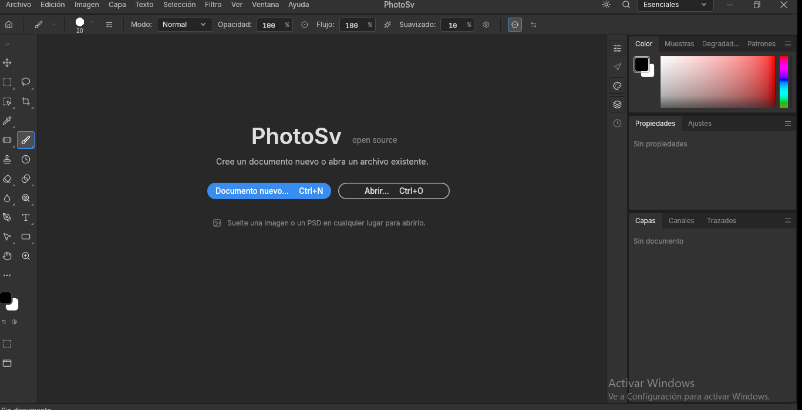

PhotoSv 0.3.0 — interfaz propia, sin bordes ni franjas.
🖼 Comparable a Photoshop
Capas, máscaras, ajustes, pinceles y modos de fusión. Paridad de menús y atajos.
⚡ Nativo y rápido
Rust + GPU, procesamiento por teselas en paralelo. Sin Electron, sin esperas.
🤖 Automatizable
CLI headless, canal de control JSON y servidor MCP: cada acción es un comando.
Instalación
- Descarga el ZIP portable y descomprímelo donde quieras.
- Ejecuta
install.cmdpara instalarlo en tu cuenta (accesos directos en el menú Inicio y el escritorio, sin permisos de administrador). - O usa
photosv.exedirecto en modo portable (conportable.txtal lado).